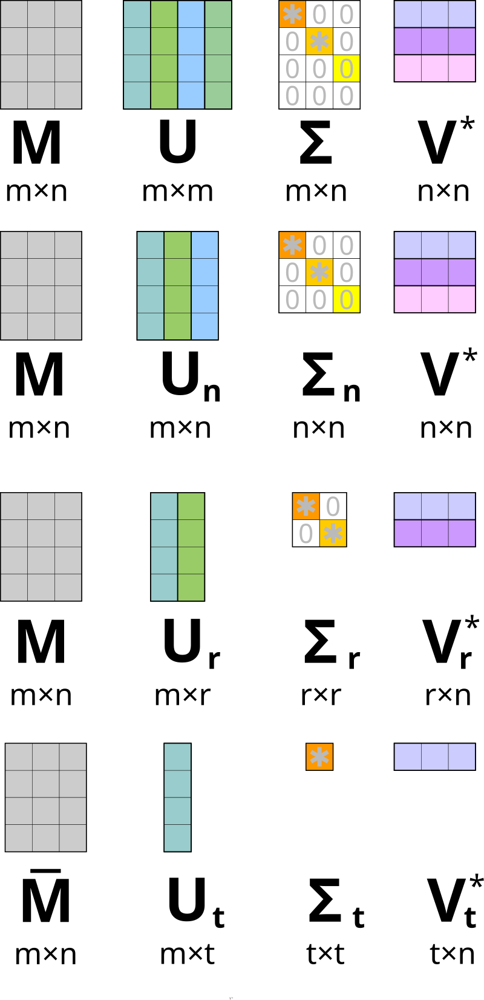

Matrix A:
[[1 2]
[3 4]]
Eigenvalues of A: [-0.37228132 5.37228132]In this chapter we will look at singular value decomposition and its applications to data science problems.
Matrices are tables that contain numbers. Here are some examples of matrices: \[ \begin{pmatrix} 1 & 2\\ 3 & 4 \end{pmatrix}, \ \begin{pmatrix} 3/2 & 1/3 & 5\\ 2 & 1/9 & 6/5 \end{pmatrix}, \ \begin{pmatrix} \pi \\ e \\ \frac{1+\sqrt{5}}{2} \end{pmatrix} \]
When we say that \(A\) is an \(n \times m\) matrix we mean that \(A\) has \(n\) rows and \(m\) columns. It is also commonly written \(A = (a_{ij})\) to denote that the matrix \(A\) has the entry \(a_{ij}\) in the \(i\)-th row and \(j\)-th column. In this course all matrices will have real entries.
Matrices have standard arithmetic operations defined on them. Matrix addition and multiplication by scalar are defined component wise. For example: \[ \begin{pmatrix} 1 & 2\\ 3 & 4 \end{pmatrix} + \begin{pmatrix} 5 & 6\\ 7 & 8 \end{pmatrix} = \begin{pmatrix} 1 + 5 & 2 + 6\\ 3 + 7 & 4 + 8 \end{pmatrix}, \] \[ 2\begin{pmatrix} 1 & 2\\ 3 & 4 \end{pmatrix} = \begin{pmatrix} 2*1 & 2*2\\ 2*3 & 2*4 \end{pmatrix}. \]
If \(A=(a_{ij})\) is an \(n \times m\) matrix and \(B=(b_{ij})\) is an \(m \times l\) matrix, then their multiplication \(AB=C\) is defined, where \(C=(c_{ij})\) is a \(n \times l\) matrix whose coeficients are given by \[ c_{ij} = \sum_{k=1}^m a_{ik}b_{kj}. \]
For example: \[\begin{equation*} \begin{split} &\begin{pmatrix} 1 & 2\\ 3 & 4 \end{pmatrix} \begin{pmatrix} 5 & 6 & 7\\ 8 & 9 & 10 \end{pmatrix} = \\ &\begin{pmatrix} 1*5+2*8 & 1*6+2*9 & 1*7 + 2*10\\ 3*5+4*8 & 3*6+4*9 & 3*7 + 4*10 \end{pmatrix} \end{split} \end{equation*}\]
Matrix multiplication is not commutative! That is, if both \(AB\) and \(BA\) are defined, then, in general, \(AB \ne BA\) (of course there are matrices that do commute).
For example, \[ \begin{pmatrix} 1 & 0 & 0 \\ 0 & 0 & -1 \\ 0 & 1 & 0 \end{pmatrix} \begin{pmatrix} 0 & 0 & 1 \\ 0 & 1 & 0 \\ -1 & 0 & 0 \end{pmatrix} = \begin{pmatrix} 0 & 0 & 1 \\ 1 & 0 & 0 \\ 0 & 1 & 0 \end{pmatrix}, \] but \[ \begin{pmatrix} 0 & 0 & 1 \\ 0 & 1 & 0 \\ -1 & 0 & 0 \end{pmatrix} \begin{pmatrix} 1 & 0 & 0 \\ 0 & 0 & -1 \\ 0 & 1 & 0 \end{pmatrix} = \begin{pmatrix} 0 & 1 & 0 \\ 0 & 0 & -1 \\ -1 & 0 & 0 \end{pmatrix}. \]
A matrix is called square if it has the same number of rows and columns.
Suppose \(A\) is a \(n \times n\) square matrix. If there exists a \(n \times n\) square matrix \(B\) such that \(AB=BA=I,\) then \(B\) is called the inverse of \(A\) and is denoted by \(A^{-1}\).
Here \(I\) is the unit matrix, i.e. a matrix whose only non-zero entries are ones on the diagonal: \[ I = \begin{pmatrix} 1 & 0 & 0 & \cdots & 0 \\ 0 & 1 & 0 & \cdots & 0 \\ 0 & 0 & 1 & \cdots & 0 \\ \vdots & \vdots & \vdots & \ddots & \vdots \\ 0 & 0 & 0 & \cdots & 1 \end{pmatrix} \]
Note that \((A^{-1})^{-1} = A\) and \((AB)^{-1}=B^{-1}A^{-1}.\)
A matrix has an inverse if and only if the determinant of \(A\) is non-zero.
The determinant \(\det\) is a function which to each square matrix associates a number.
There is a general formula for the determinant of \(n \times n\) matrix but it is rather clunky so the determinant is usually defined inductively as follows.
First of all a \(1 \times 1\) matrix \(A\) has only one entry \(a_{11}\), so \(\det(A)=a_{11}\).
Then for a \(2 \times 2\) matrix we have the formula \[ \det \begin{pmatrix} a_{11} & a_{12}\\ a_{21} & a_{22} \end{pmatrix} = a_{11}a_{22}-a_{12}a_{21} \].
For a \(3 \times 3\) matrix we have \[\begin{equation*} \begin{split} &\det \begin{pmatrix} a_{11} & a_{12} & a_{13} \\ a_{21} & a_{22} & a_{23} \\ a_{31} & a_{32} & a_{33} \end{pmatrix} = a_{11} \det \begin{pmatrix} a_{22} & a_{23} \\ a_{32} & a_{33} \end{pmatrix} \\&- a_{12} \det \begin{pmatrix} a_{21} & a_{23} \\ a_{31} & a_{33} \end{pmatrix} + a_{13} \det \begin{pmatrix} a_{21} & a_{22} \\ a_{31} & a_{32} \end{pmatrix} \end{split} \end{equation*}\]
And then you continue inductively by writing down similar formulas.
A matrix of the form \[ \begin{pmatrix} a_{1} \\ a_{2} \\ \vdots \\ a_{n} \end{pmatrix} \] is called an \(n\) dimensional column vector. In this course when we say “vector” we mean a column vector. Column vectors form a linear space \(\mathbb{R}^n.\)
There are also row vectors. They are matrices of the form \[ (a_1, a_2, \dots, a_n). \]
We will denote the transpose of the matrix \(A\) by \(A^T\), i.e. \(A^T\) is \(A\) with rows and columns switched. Example: \[ A = \begin{pmatrix} 1 & 2\\ 3 & 4 \end{pmatrix}, \ A^T = \begin{pmatrix} 1 & 3\\ 2 & 4 \end{pmatrix} \]
Note that \((A^{T})^{T} = A\) and \((AB)^T=B^TA^T.\)
A complex number \(\lambda\) is called an eigenvalue of an \(n\) by \(n\) square matrix \(A\) if there exists an \(n\) dimensional non-zero vector \(u \in \mathbb{R}^n\) such that \[ Au = \lambda u. \]
The vector \(u\) is then called an eigenvector. Eigenvectors corresponding to the same eigenvalue form a linear subspace of \(\mathbb{R}^n.\)
Eigenvalues of \(A\) are in one to one correspondence with the roots of the polynomial \[ P(\lambda) = \det(A-\lambda I). \]
For example, in order to find the eigenvalues of \[ \begin{pmatrix} 1 & 2\\ 3 & 4 \end{pmatrix} \] we can solve the following equation \[ \det \begin{pmatrix} 1-\lambda & 2\\ 3 & 4-\lambda \end{pmatrix} = \lambda^2-5\lambda-2=0. \] Solutions are \(\frac{5+\sqrt{33}}{2}\approx5.37,\) \(\frac{5-\sqrt{33}}{2}\approx-0.37\).
We can also find eigenvalues of a matrix using python’s numpy package:
Every real \(n \times m\) matrix \(A\) has a (non-unique) Singular Value Decomposition (SVD): \[ A = U M V^T, \] where \(U\) is a \(n \times n\) matrix, \(M\) is a \(n \times m\) matrix and \(V\) is a \(m \times m\) matrix. Matrices \(U\) and \(V\) are orthogonal, i.e. \(UU^T=I\) and \(VV^T=I\) and \(M\) is a diagonal matrix with non-negative entires.
Algorithms for computing SVD can be found on wikipedia.
then \[ U = \begin{pmatrix} 0 & -1 & 0 & 0\\ -1 & 0 & 0 & 0\\ 0 & 0 & 0 & -1\\ 0 & 0 & -1 & 0 \end{pmatrix}, \ M = \begin{pmatrix} 3 & 0 & 0 & 0 & 0\\ 0 & \sqrt{5} & 0 & 0 & 0\\ 0 & 0 & 2 & 0 & 0\\ 0 & 0 & 0 & 0 & 0 \end{pmatrix} \]
and \[ V^T = \begin{pmatrix} 0 & 0 & -1 & 0 & 0\\ -\sqrt{0.2} & 0 & 0 & 0 & -\sqrt{0.8}\\ 0 & -1 & 0 & 0 & 0\\ 0 & 0 & 0 & 1 & 0\\ -\sqrt{0.8} & 0 & 0 & 0 & \sqrt{0.2} \end{pmatrix}. \]
The non-zero entries of \(M\) are the square roots of the eigenvalues of the square matrix \(AA^T,\) they are called the singular values of \(A,\) hence the name of the decomposition.
Note that the eigenvalues of \(AA^T\) must be real and non-negative, because \(AA^T\) is self-adjoint (with respect to the usual Euclidean norm) and positive semi-definite. Hence, singular values are well defined.
Usually SVD is chosen so that the non-zero values of \(M\) would be arranged from largest to smallest.
Let \(k = \min(n, m).\) Then, in applications, only the first \(k\) columns of \(U\) and \(V\) are kept. Denote by \(U_k,\) \(M_k\) and \(V_k\) the truncated \(U,\) \(M\) and \(V\). Then we still have \(A = U_k M_k V^T_k.\) Performing this truncation saves a lot of space.
Here is a picture that illustrates this truncation (taken from wikipedia)
SVD can be used to fit linear regression.
Linear regression is a model that approximates a dependent random variable \(Y\) by independent random variables \(X_1, \ \dots, \ X_m\) using a linear function (more accurately an affine function). I.e. \[ Y = \beta_0 + \beta_1 X_1 + \dots + \beta_m X_m + \varepsilon, \] where \(\varepsilon\) is a random variable representing noise.
Let’s say we have \(n\) observations \((y_i, x_{i1}, \dots, x_{im})_{i=1}^n.\) Denote \[ Y = \begin{pmatrix} y_1 \\ \dots \\ y_n \end{pmatrix}, \ X = \begin{pmatrix} 1 & x_{11} & \dots & x_{1m}\\ \dots \\ 1 & x_{n1} & \dots & x_{nm} \end{pmatrix}, \ \beta = \begin{pmatrix} \beta_0 \\ \dots \\ \beta_m \end{pmatrix}. \]
One approach to fitting a linear regression model to this data is to find \(\beta\) that minimizes \[ \left\lVert X\beta-Y \right\rVert^2. \]
This is called least-squares estimate. It can easily be shown that such a \(\beta\) is equal to \[(X^TX)^{-1}X^TY.\]
Usually, in implementations of linear regression, \(\beta\) is computed using SVD.
Let \(X=UMV^T\) be the SVD of \(X.\) Then, \[\begin{equation*} \begin{split} &\beta = VM^{-1}U^TY. \end{split} \end{equation*}\]
Let’s fit a linear regression model using SVD. We are going to use the diabetes dataset that ships with sklearn.
from sklearn.datasets import load_diabetes
from sklearn.metrics import mean_squared_error
import numpy as np
X = load_diabetes().data
Y = load_diabetes().target
n, m = X.shape
X_with_ones = np.insert(X, 0, 1., axis=1) # Add ones to dataset
U, M, V = np.linalg.svd(X_with_ones, full_matrices=False) # Note that V is already transposed
beta = ((V.T * np.reciprocal(M)) @ U.T) @ Y.T
Y_svd = X_with_ones @ beta.T
print(f"MSE with our fit: {mean_squared_error(Y, Y_svd)}")
print(f"Dims X_with_ones: {X_with_ones.shape}, U: {U.shape}, M: {M.shape}, V: {V.shape}.")MSE with our fit: 2859.6963475867506
Dims X_with_ones: (442, 11), U: (442, 11), M: (11,), V: (11, 11).Let’s compare our fit to the one provided by sklearn's linear regression model.
from sklearn.linear_model import LinearRegression
model = LinearRegression()
model.fit(X, Y) # You do not need to append 1 to X when using sklearn's function
Y_sklearn = model.predict(X)
print(f"MSE with sklearn: {mean_squared_error(Y, Y_sklearn)}")
print(f"MSE between our fit and sklearn: {mean_squared_error(Y_svd, Y_sklearn)}")MSE with sklearn: 2859.69634758675
MSE between our fit and sklearn: 6.325051042998488e-27The results are the same (up to rounding errors) as they should be. sklearn also uses SVD under the hood to fit linear regression.
Principal Component Analysis (PCA) is a technique for reducing the dimensionality of data.
Suppose you have \(n\) samples of \(m\) variables. PCA allows you to compress those \(m\) variables into let’s say \(k\) variables, where \(k < m\). Hopefully, this compression also removes noise from your dataset.
If you have \(n\) samples of \(m\) variables you can place them into a \(n\) by \(m\) matrix.
You can perform PCA as follows:
One typical use of PCA is to visualize high dimensional data. Reduce the dimension of your samples to 2 and then you can visualize your dataset using a scatter plot.
sklearn has an implementation of PCA, which also performs step 1 automatically, i.e. you do not have to provide centralized data.
Let’s visualize the iris dataset using PCA. Iris dataset contains measurement samples of three types of flowers.
There is another similar way to compute PCA.
Let’s say that our data is placed in a matrix \(A\) (rows represent samples, columns represent variables). For simplicities sake, let’s assume that our variables are centered (so the mean of each column of \(A\) is \(0\)).
Now compute a singular value decomposition of \(A = UMV^T,\) where the regular space saving truncation is applied. Now truncate \(V\) by keeping only the first \(k\) columns (so you are keeping the first \(k\) rows of \(V^T\)). Denote the truncated matrix by \(V_k.\)
Now multiplying \(A\) by \(V_k\) you will get the same result as the previous procedure of computing PCA.
This is how PCA is implemented in sklearn.
The advantage of this approach is that the truncated matrix \(V_k\) defines a map from the full space \(\mathbb{R}^m\) to the compressed space \(\mathbb{R}^k.\) You can use this map to compress samples of data that were not used when fitting the PCA model (“fitting” here means computing \(V_k\)). You do this by forming a row vector out of your sample and multiplying it with \(V_k\).
You can also decompress a sample of data by mutiplying with \(V_k^T\).
Note that this compression is lossy. That is, if you compress and then decompress you will get a vector that is different from the original.
Lossy compression (such as PCA) can be used to detect anomalies in your dataset.
Suppose you have a procedure that compresses and decompresses data. Suppose your data is represented by vectors from \(\mathbb{R}^n\) and the compressed data is represented by vectors from \(\mathbb{R}^k,\) where \(k < n\). Then the compression procedure can be expressed by some function \(C: \mathbb{R}^n \rightarrow \mathbb{R}^k\) and the decompression procedure can be exrpessed by some function \(D: \mathbb{R}^k \rightarrow \mathbb{R}^n.\)
Define the reconstruction error by \[ E(u) = \frac{1}{n}\left\lVert u-D(C(u)) \right\rVert^2. \] Note that there are different ways for defining reconstruction error, this is just an example.
Now you fit your compression procedure on typical samples of your data. Then the reconstruction error of non-anomalies will be on average lower then the reconstruction error of anomalies. So you can use this fact to detect anomalies.
Let’s implement this idea using PCA. We are going to use images of faces for typical examples of data and we are going to turn some faces sideways to get anomalies.
from sklearn.datasets import fetch_olivetti_faces
import matplotlib.pyplot as plt
import numpy as np
def show(img):
"""Function for displaying image"""
plt.imshow(img.squeeze(), cmap='gray')
plt.axis('off')
olivetti_faces = fetch_olivetti_faces()["images"]
anomalies = olivetti_faces[:5]
anomalies = anomalies.transpose(0, 2, 1)
typical_data = olivetti_faces[5:]
print("Typical face and anomaly:")
show(np.array([typical_data[0], anomalies[0]]).reshape(128, 64))Typical face and anomaly:from sklearn.decomposition import PCA
pca = PCA(n_components=64, random_state=34)
typical_compressed = pca.fit_transform(typical_data.reshape(-1, 64*64))
typical_uncompressed = pca.inverse_transform(typical_compressed)
anomalies_compressed = pca.transform(anomalies.reshape(-1, 64*64))
anomalies_uncompressed = pca.inverse_transform(anomalies_compressed)
average_typical_reconstruction_error = np.mean(np.mean((typical_data.reshape(-1, 64*64)-typical_uncompressed)**2, axis=1))
anomaly_reconstruction_errors = np.mean((anomalies.reshape(-1, 64*64)-anomalies_uncompressed)**2, axis=1)
print(f"Average reconstruction error of typical data: {average_typical_reconstruction_error}")
print(F"Anomaly reconstruction errors: {anomaly_reconstruction_errors}")Average reconstruction error of typical data: 0.0019756590481847525
Anomaly reconstruction errors: [0.00977079 0.00913271 0.0105074 0.00883756 0.01041554]PCA can be used in recommender systems.
Suppose we have a table that contains scores given to movies by users. Using this data we would like to group similar movies together for purposes of generating recommendations.
Let users be in rows, and movies in columns and values represent a rating that a user gave to a movie. If a user has not reviewed a movie set their rating to a middle value to reflect the fact that we do not know how the user feels about the movie.
Now perform PCA on this matrix by computing the SVD and getting the truncated matrices \(U_r M_r V_r^T\). The matrix \(V_r^T\) stores information on original matrix’s columns, in this case movies.
The columns of \(V_r^T\) give an embedding of the movies to \(\mathbb{R}^r\). I.e. the column that represents a movie gives the coordinates of the movie in \(\mathbb{R}^r\). If we assume that similar people rate similar movies similarly we then get that similar movies should be close to each other in this space.
Use this idea to generate some recommendations for movies (code for loading the data below).
The goal is to write a script that given a movie name returns similar movies.
Also, truncate the dataset to top 1000 movies in terms of review count. This should give more robust results.
{kind=link}